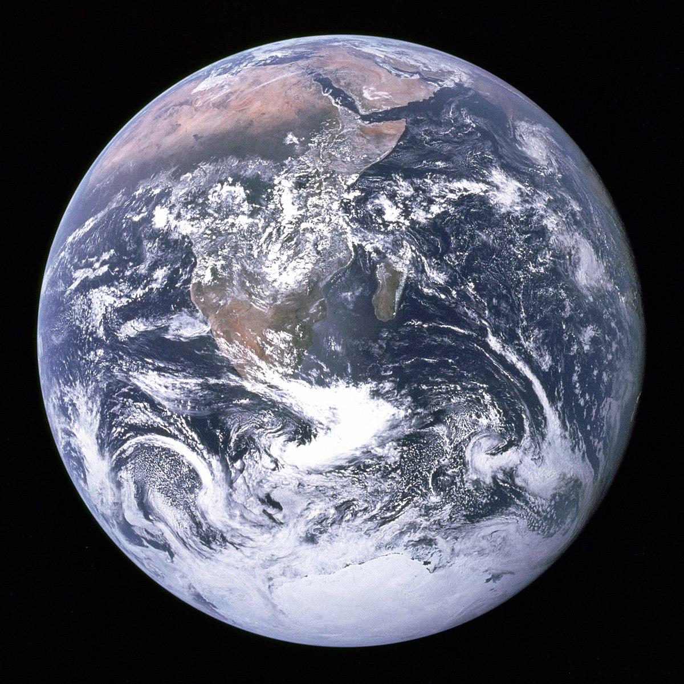

| Info | Mercury | Earth | Mars | Uranus |
|---|---|---|---|---|
| Mass (kg) | 3.3 x 1023 | 5.98 x 1024 | 6.42 x 1023 | 8.68 x 1025 |
| Diameter (km) | 4879.4 | 12756 | 6787 | 51118 |
| Mean Density (kg/m3) | 5420 | 5520 | 3940 | 1290 |
| Escape velocity (m/s) | 4300 | 11200 | 5000 | 21300 |
| Average distance from Sun | 0.387 AU (57,909,175 km) | 1 AU (149,597,890 km) | 1.524 AU (227,936,640 km) | 19.19 AU (2,870,972,200 km) |
| Rotation period (length of day) | 58.65 | 1 (23.93 hours) | 1.026 | 0.72 (17.9 Earth hours)(retrograde) |
| Revolution period (length of year) | 87.97 | 365.26 | 686.98 | 30,685 (84 Earth years) |
| Image | |
 | |
|